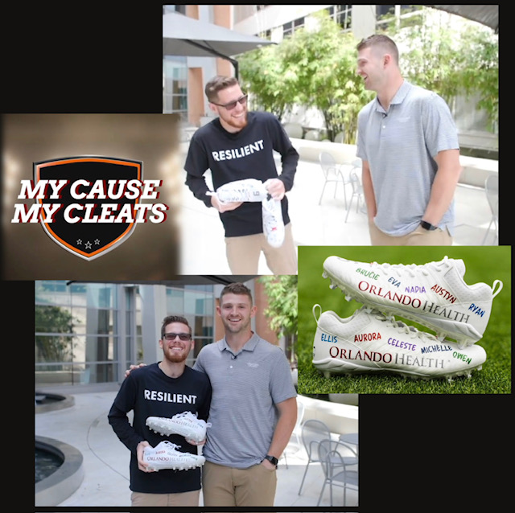
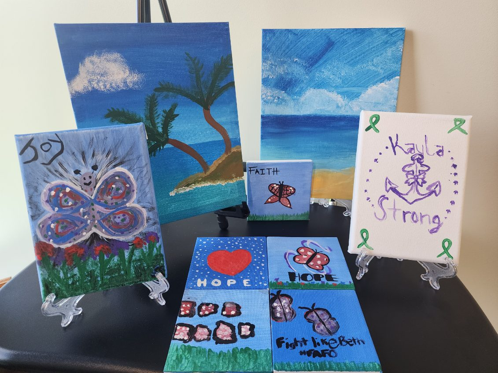
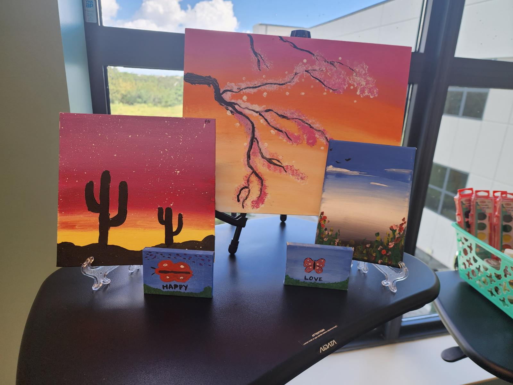
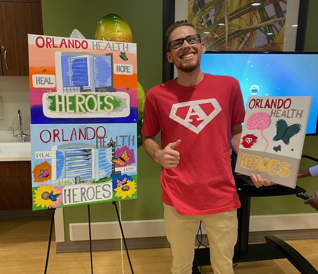
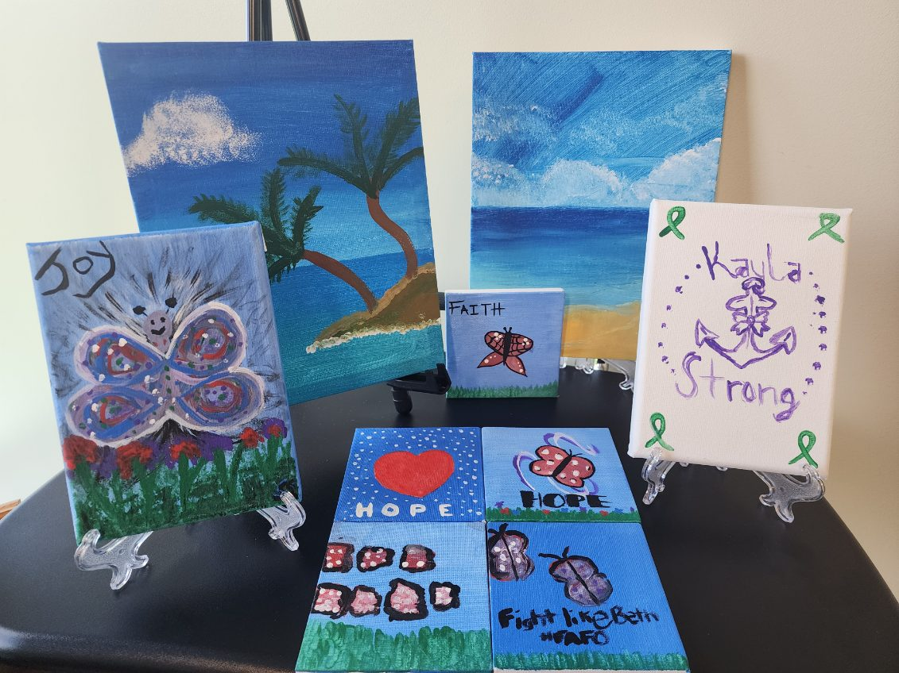
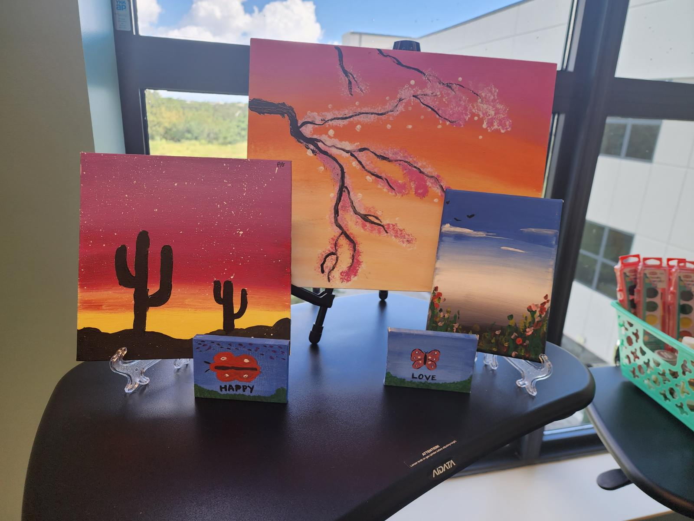
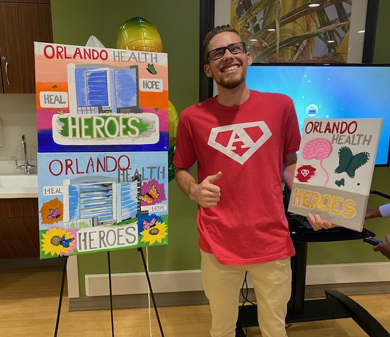

Artistic Accomplishments
 Designed cleats for Houston Texan's Quarterback
Jeff Driskel My Cause My Cleats 2023, Run like the wind!


Led a painting event for the 2023 TBI Reunion.
Art displayed at the new Orlando Health Advanced Rehabilitation Institute

Art I donated to the Orlando Health TBI dept


Jeff Driskel My Cause My Cleats 2023, Run like the wind!


Led a painting event for the 2023 TBI Reunion.
Art displayed at the new Orlando Health Advanced Rehabilitation Institute

Art I donated to the Orlando Health TBI dept